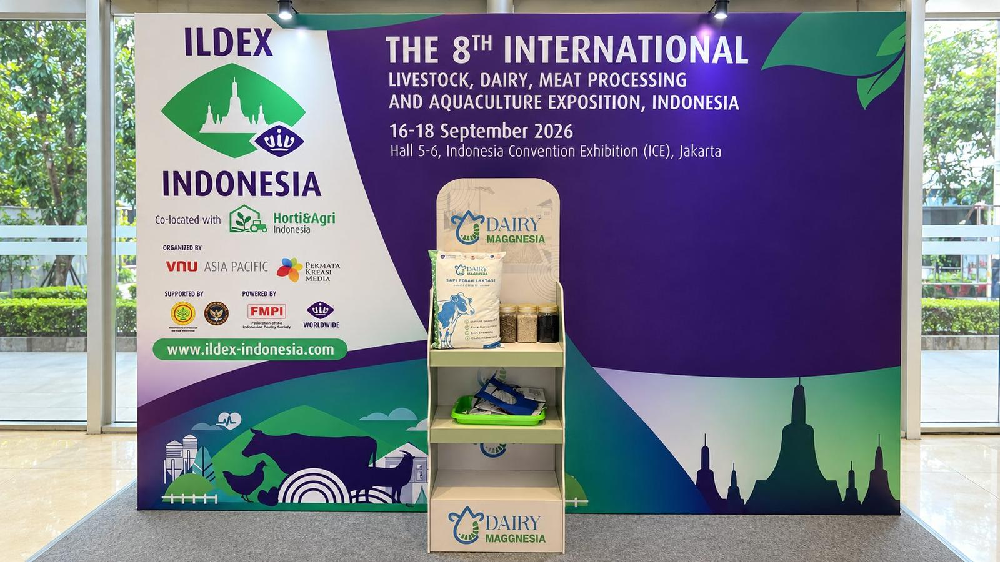
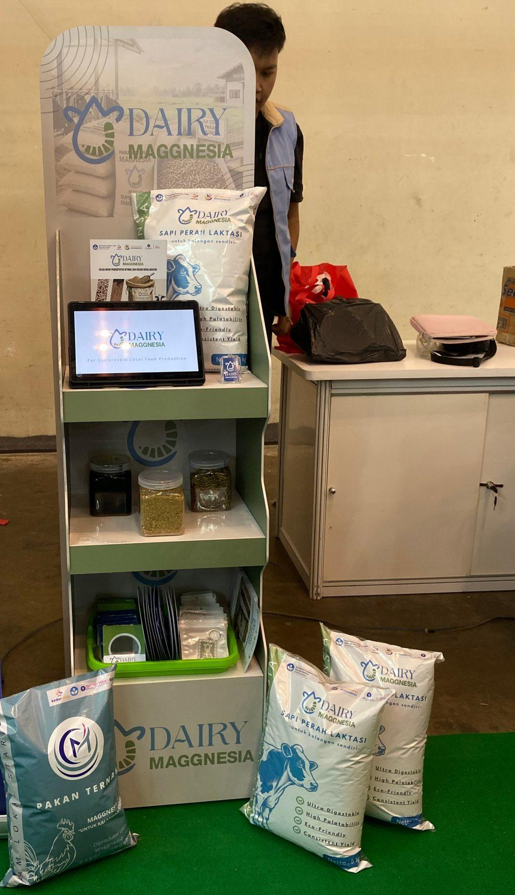
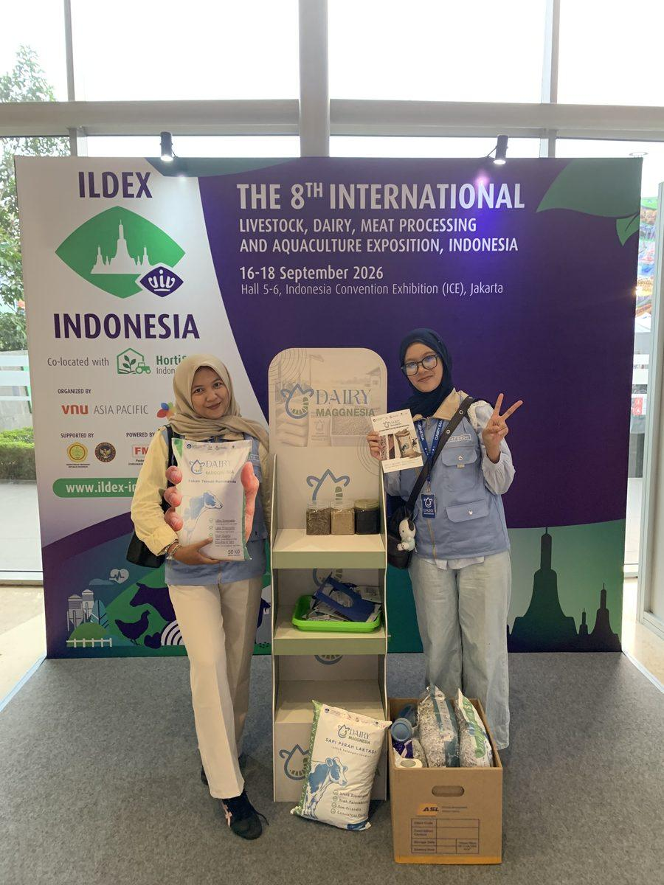
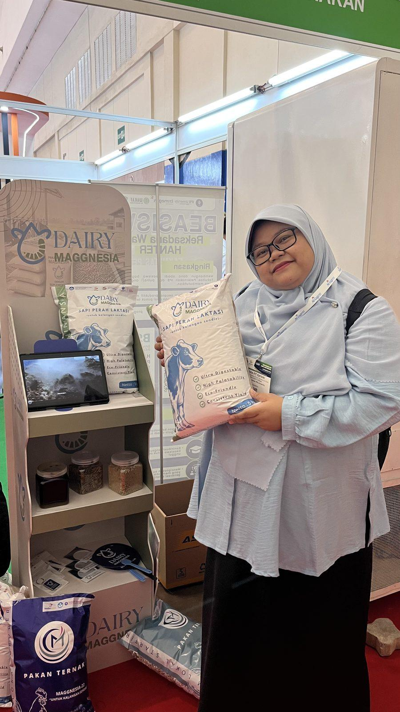
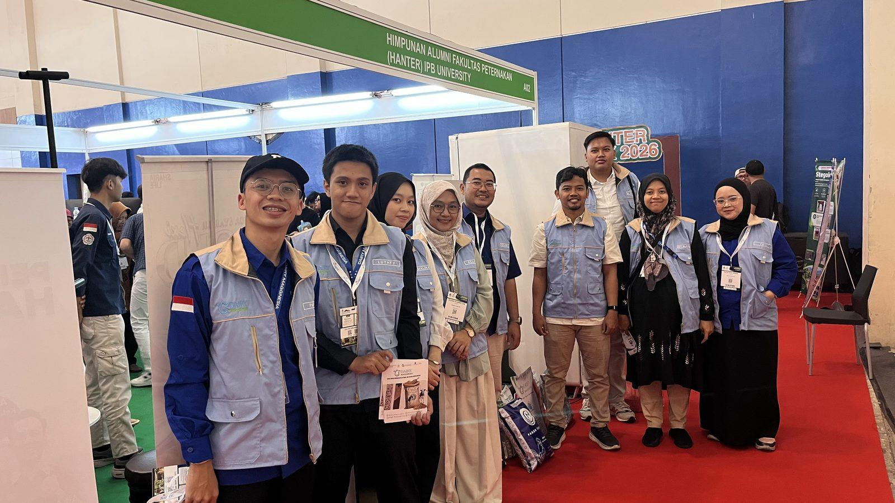
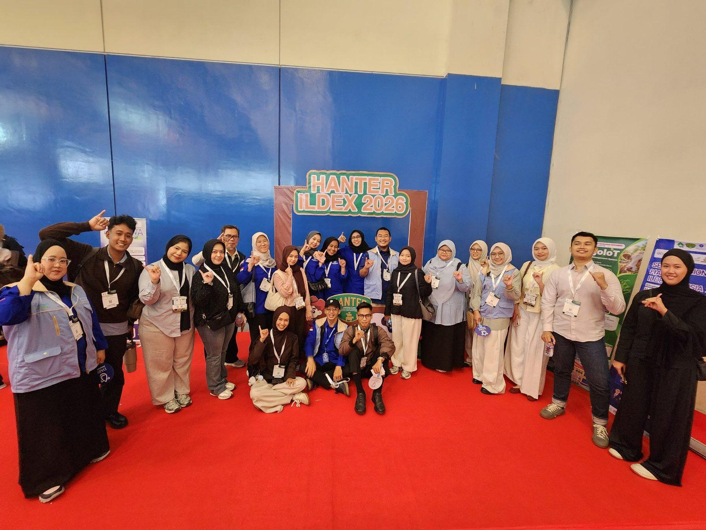

Dairy Maggnesia Perkenalkan Inovasi Pakan Sapi Perah di ILDEX Indonesia 2026
Dairy Maggnesia hadir di ILDEX Indonesia 2026 untuk memperkenalkan inovasi pakan konsentrat sapi perah dengan pemanfaatan minyak larva BSF. Kehadiran maggot menjadi salah satu hal yang memantik rasa penasaran pengunjung.

Tangerang — Dairy Maggnesia memperkenalkan inovasi pakan konsentrat sapi perah yang memanfaatkan minyak larva Black Soldier Fly (BSF) sebagai salah satu bahan alternatif dalam formulasi pakan pada ILDEX Indonesia 2026, yang berlangsung pada 16–18 September 2026 di Indonesia Convention Exhibition (ICE) BSD City, Tangerang.


Kehadiran Dairy Maggnesia di pameran tersebut menjadi kesempatan untuk membawa hasil pengembangan berbasis riset lebih dekat dengan pelaku industri peternakan sekaligus mengenalkan pemanfaatan maggot BSF dalam pakan sapi perah.
ILDEX Indonesia merupakan pameran internasional yang mempertemukan pelaku industri peternakan, dairy, teknologi pakan, kesehatan hewan, hingga pengolahan hasil ternak.
Diselenggarakan bersamaan dengan Horti & Agri Indonesia 2026, pameran ini mengangkat tema:
“The Transformation of Sustainable Food and Livestock System through Technology, Research and Innovation.”
Mengenalkan Maggot BSF untuk Pakan Sapi Perah
Di tengah berbagai teknologi dan produk peternakan yang dipamerkan, satu hal justru kerap memantik rasa penasaran pengunjung di area Dairy Maggnesia, yaitu maggot BSF.
Maggot sudah cukup dikenal untuk pengolahan bahan organik maupun pakan unggas dan ikan. Namun, ketika bahan yang sama dibicarakan dalam konteks pakan sapi perah, pertanyaan pun mulai bermunculan.
Bagaimana maggot digunakan dalam pakan sapi? Apakah diberikan secara langsung? Mengapa bahan ini dipilih?
Pertanyaan-pertanyaan tersebut menjadi pintu masuk bagi tim untuk menjelaskan bahwa Dairy Maggnesia tidak memberikan maggot secara langsung kepada sapi. Inovasi ini memanfaatkan minyak larva BSF sebagai salah satu bahan alternatif dalam pengembangan pakan konsentrat sapi perah.
Untuk membuat penjelasan lebih mudah dipahami, tim juga membawa contoh maggot kering sehingga pengunjung dapat melihat langsung bahan yang sedang dibicarakan.
Dari sana, percakapan berkembang dari sekadar “apa itu maggot?” menjadi bagaimana bahan tersebut dapat diproses dan dikembangkan dalam formulasi pakan ternak.
Membawa Hasil Riset Lebih Dekat dengan Industri

Dalam pameran tersebut, Dairy Maggnesia juga menampilkan kemasan sampel 5 kg sebagai bagian dari pengenalan produk. Kemasan ini digunakan khusus untuk kebutuhan pameran, sementara ukuran yang menjadi acuan pengembangan produk adalah 50 kg.
Keikutsertaan di ILDEX menjadi kesempatan untuk memperkenalkan hasil pengembangan Dairy Maggnesia sekaligus melihat bagaimana inovasi pakan berbasis maggot BSF dipahami oleh pelaku industri dan peternakan.
Pertanyaan dan respons yang muncul selama pameran juga menjadi masukan penting dalam menjelaskan produk dengan cara yang semakin mudah dipahami.


Kenali produknya
Dairy Maggnesia, pakan konsentrat sapi perah